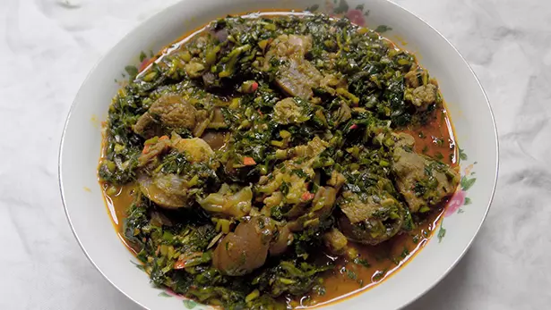

Vegetable Soup

Description
Vegetable soup is paired with any of the swallows in Nigeria and served as either lunch or dinner. This recipe shows you how to cook a healthy soup with vegetables (ugu and water leaves) the Nigerian way.
I love this soup for many reasons:
For starters, I made it with vegetables, and those are synonymous with health.
In Nigeria, we combine different vegetables to make different soups.
Okra soup, Afang soup and even edikaikong are different combinations of different veggies.
Veggies are good for the heart and body cells.
Ingredients
- Big bowl Waterleaves
- Big bowl ugu leaves (fluted pumpkin)
- Roasted mackerel
- 1KG or 35 Ounces of Goat meat
- 1 cup crayfish
- 6 scotch bonnet peppers
- 400ml Palm oil
- 2 seasoning cubes
- Salt to taste
- 2 tablespoons Ground Ofor
Steps
-
-
Slice the water leaves and fluted pumpkin leaves with a kitchen knife, you want them thinly sliced as you can see below.
-
What you find below is a bowl of fluted pumpkin leaves – vegetables.
This is the equivalent of 12 cups. You should wash ugu (fluted pumpkin) properly before slicing them.
-
You can wash the water leaves after slicing them. Wash the leaves properly and transfer into a sieve to strain excess water.
You don’t want too much water in your vegetable soup.
-
Wash the roasted fish, remove center bone and break to smaller bits and Season the goat meat with a teaspoon of salt, sliced onions and two seasoning cubes. Allow the meat to boil, add two cups of water and let the meat cook until it becomes tender and easy to chew.
-
To the boiling meat, add the washed, roasted fish. Allow them to cook until the water dries. Don’t allow it to burn.
-
When the meat cooked and the water is almost completely dried, add the palm oil, 400ml. You need lots of palm oil when you cook vegetable soup.
-
Now you add the vegetables, the water leaves should come first. It should fill the pot, it will go down in 3 minutes as you continue to stir.
-
Add the pounded crayfish and peppers.
-
Add the ugu leaves (fluted pumpkin) at this point.
-
Stir all together and allow the vegetable soup to simmer for three minutes.